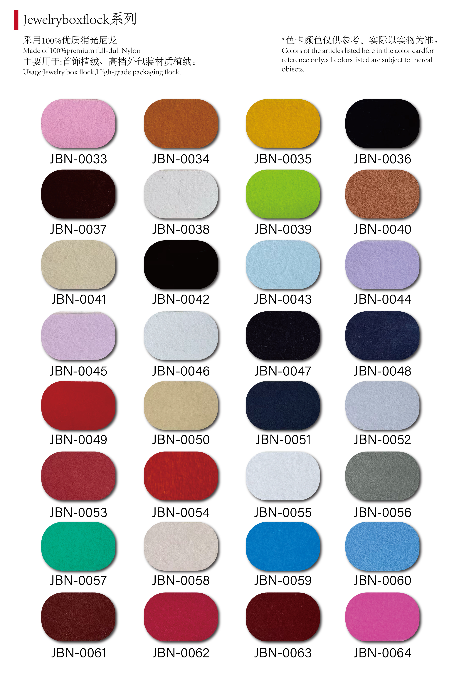
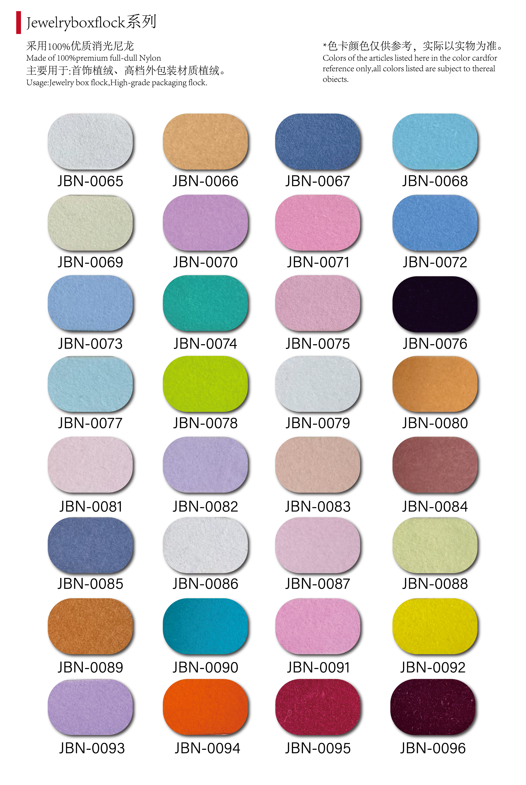
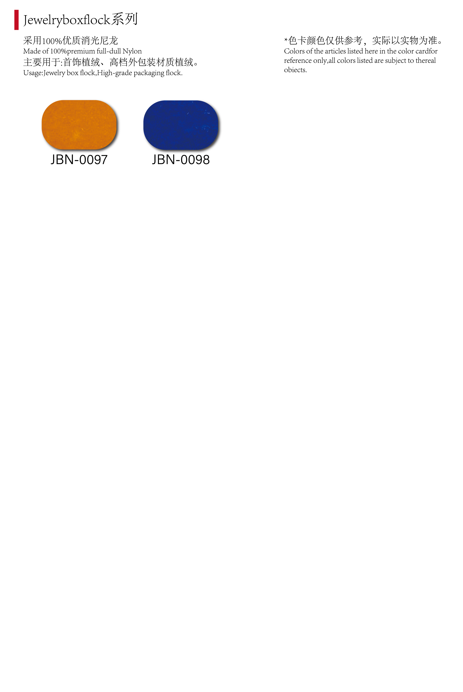
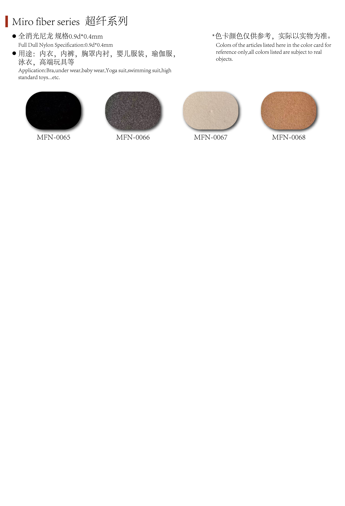
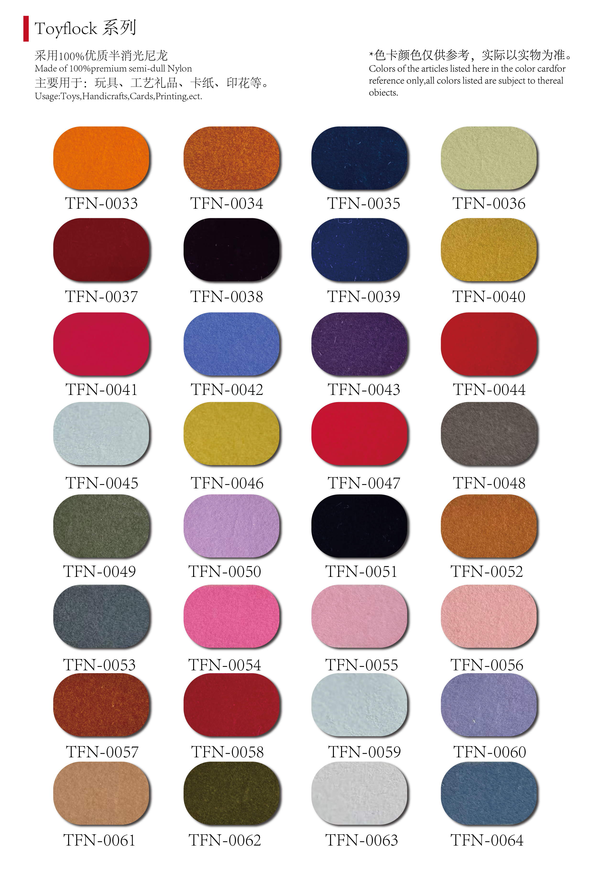

Nylon flock fiber samples — multiple deniers and lengths available
Flock Fibers — Nylon, Rayon & Polyester
We supply precision-cut flock fibers for electrostatic flocking across all major applications: textiles, automotive interiors, packaging, home décor, and more. Three material types to match your specific requirements.
| Specification | Nylon | Rayon | Polyester |
|---|---|---|---|
| Denier | 1.5D – 30D | 1.5D – 25D | 1.5D – 20D |
| Length | 0.3mm – 5.0mm | 0.3mm – 3.0mm | 0.3mm – 3.0mm |
| Softness | ★★★★☆ | ★★★★★ | ★★★☆☆ |
| Durability | ★★★★★ | ★★★☆☆ | ★★★★☆ |
| Cost | $$$ | $$ | $ |
| Best For | Automotive, industrial | Textiles, apparel, home décor | Crafts, packaging, general use |
- Colors: Any color available — we match your sample or Pantone code
- MOQ: 50 kg per color (negotiable for trial orders)
- Packaging: 25 kg/bag, custom packaging available
Color Swatches
Click any swatch to enlarge — actual colors may vary slightly from screen display

JBN-1

JBN-2

JBN-3

JBN-4

MFN-1

MFN-2

MFN-3
TFN-1

TFN-2

TFN-3

TFN-4